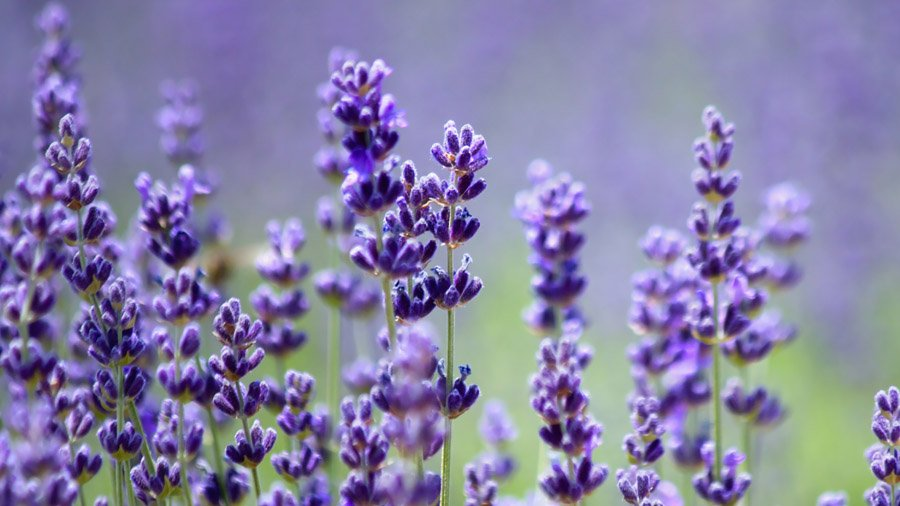
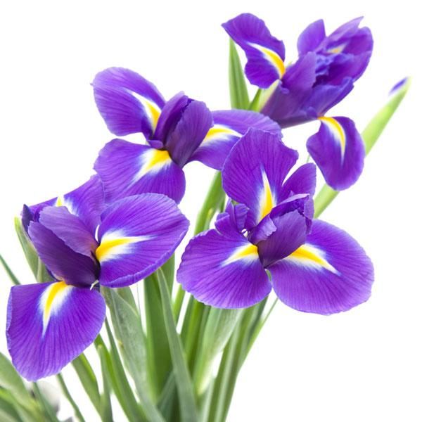
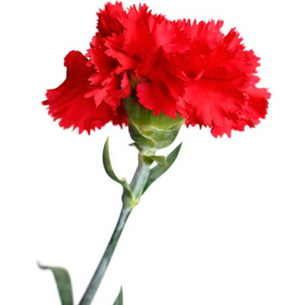

Види багаторічних рослин за способом зимівлі
У тропіках і субтропіках з м'якими зимами трав'янисті багаторічники ростуть безперервно, а при більш помірному кліматі їх зростання обмежений теплим порою року.Всі багаторічні квіти можна розділити на такі види:
Холодостійкі багаторічники з зимуючої наземною частиною
Холодостійкі багаторічники з відмирає на зиму наземною частиною
Теплолюбні багаторічники, зимуючі у вигляді цибулин або бульб в приміщенні.
Багаторічних квітів з зимуючими стеблами в наших широтах практично немає. Морозні зими не дозволяють. Барвінок, морозник, бадан, юка - ось і всі види. Там, де зими дощові, але температура рідко буває нижче 0, всю зиму зеленіють братки, декоративна капуста, плющ, примули.
У більшості популярних у нас багаторічників стебла на зиму відмирають, а навесні рослини відроджуються з кореневищ або клубнелуковиц. Це хости, півонії, лілейники, флокси, іриси, дельфиниуми, люпин. Особливості зимівлі для різних видів можуть відрізнятися. Деякі найбільш теплолюбні рослини потребують мульчировании грунту на зиму для захисту від сильних морозів. У районах з суворим холодним кліматом їм потрібні укриття. Купуючи багаторічна рослина для свого саду потрібно уточнити в енциклопедії рослин, наскільки він морозостійкий. Важливо також розуміти, що різні сорти одного виду можуть відрізнятися по холодостійкості. Ці особливості зазвичай дізнаються безпосередньо у виробників.
Багаторічні квіти для саду
Безліч теплолюбних багаторічників, абсолютно не переносять холодів, успішно вирощують садівники в середній смузі Росії і на її півночі. Секрет в тому, що цілий ряд рослин утворюють цибулини, бульбоцибулини і бульби, які можна викопати і зберігати в приміщенні, захищеному від морозів. Для цих видів зима - період глибокого спокою, в цей час вони не ростуть і можуть зберігатися в погребі, прохолодною коморі або навіть на нижній полиці в холодильнику. Це жоржини, гладіолуси, лілії, кали, бульбові бегонії.
Види багаторічних рослин за вимогами до освітленості
Більшість садових рослин здатне пристосовуватися до різного ступеня освітленості. Вони можуть рости і в тіні, і на сонячних ділянках. Але при цьому відрізняються по декоративності. Наприклад, дельфиниуми на сонці дають багато квітконосів з великою кількістю квіток, а в тіні - прикрашають сад своїми різьбленими листям, але цвітінням не радують.

За вимогами до сонячного освітлення їх ділять на:
світлолюбні багаторічникитіньолюбні багаторічники
тіньовитривалі багаторічники
З світлолюбними рослинами все зрозуміло - вони люблять сонце, в густій тіні не ростуть, для їх вирощування необхідні відкриті, добре освітлені місця. Це мак, жоржин, півонія тонколистий, дельфініум, ромен, гайлардия, гвоздика, рудбекія, гладіолус.
Тіньолюбні багаторічні рослини: хоста, конвалія, аквилегия, фіалка запашна, бадан, примула, незабудка. У тіні вони краще розвиваються, забарвлення їх квіток яскравіше. На добре освітленому сонцем ділянці у цих видів вигорають листя, квітки втрачають забарвлення, тривалість цвітіння зменшується.
До тіньовитривалим рослинам відносять ті види, які легко пристосовуються до різних світлових умов і добре ростуть і на сонці, і в невеликій тіні. Це дицентра, астільба, ірис, флокс, дороникум, лілейники, хризантеми.

